Note
Unsaturated Zone Flow (UZF) Package demo
Demonstrates functionality of the flopy UZF module using the example from Niswonger and others (2006). This is the same as the SFR example problem from Prudic and others (2004; p. 13–19), except the UZF package replaces the ET and RCH packages.
Problem description:
Grid dimensions: 1 Layer, 15 Rows, 10 Columns
Stress periods: 12
Units are in seconds and days
Flow package: LPF
Stress packages: SFR, GHB, UZF
Solver: SIP
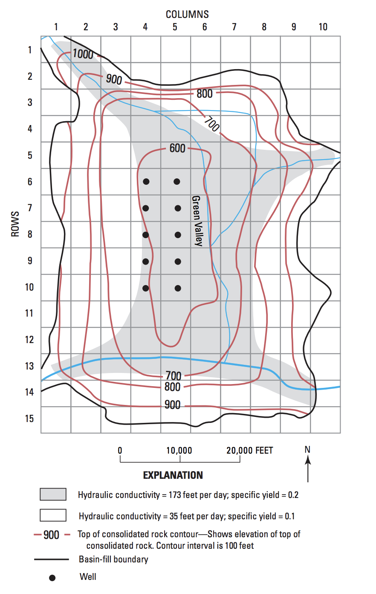
[1]:
import os
import sys
import glob
import shutil
from pathlib import Path
from tempfile import TemporaryDirectory
import numpy as np
import matplotlib as mpl
import matplotlib.pyplot as plt
import pandas as pd
proj_root = Path.cwd().parent.parent
# run installed version of flopy or add local path
try:
import flopy
except:
sys.path.append(proj_root)
import flopy
from flopy.utils import flopy_io
print(sys.version)
print("numpy version: {}".format(np.__version__))
print("matplotlib version: {}".format(mpl.__version__))
print("pandas version: {}".format(pd.__version__))
print("flopy version: {}".format(flopy.__version__))
3.10.10 | packaged by conda-forge | (main, Mar 24 2023, 20:08:06) [GCC 11.3.0]
numpy version: 1.24.3
matplotlib version: 3.7.1
pandas version: 2.0.1
flopy version: 3.3.7
[2]:
# Set name of MODFLOW exe
# assumes executable is in users path statement
exe_name = "mf2005"
Set up a temporary workspace.
[3]:
temp_dir = TemporaryDirectory()
path = Path(temp_dir.name)
gpth = proj_root / "examples" / "data" / "mf2005_test" / "UZFtest2.*"
for f in glob.glob(str(gpth)):
shutil.copy(f, path)
Load example dataset, skipping the UZF package.
[4]:
m = flopy.modflow.Modflow.load(
"UZFtest2.nam",
version="mf2005",
exe_name=exe_name,
model_ws=path,
load_only=["ghb", "dis", "bas6", "oc", "sip", "lpf", "sfr"],
)
Remove previous UZF external file references so they don’t conflict with the ones made by FloPy.
[5]:
rm = [True if ".uz" in f else False for f in m.external_fnames]
m.external_fnames = [f for i, f in enumerate(m.external_fnames) if not rm[i]]
m.external_binflag = [f for i, f in enumerate(m.external_binflag) if not rm[i]]
m.external_output = [f for i, f in enumerate(m.external_output) if not rm[i]]
m.external_units = [f for i, f in enumerate(m.external_output) if not rm[i]]
Define the izufbnd array. In the example, the UZF package izufbnd array is the same as the ibound.
[6]:
fig = plt.figure(figsize=(8, 8))
ax = fig.add_subplot(1, 1, 1, aspect="equal")
mapview = flopy.plot.PlotMapView(model=m)
quadmesh = mapview.plot_ibound()
linecollection = mapview.plot_grid()
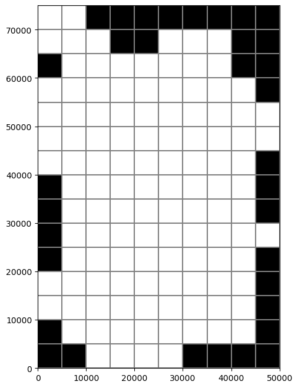
Read the irunbnd array from an external file.
[7]:
irnbndpth = proj_root / "examples" / "data" / "uzf_examples" / "irunbnd.dat"
irunbnd = np.loadtxt(irnbndpth)
fig = plt.figure(figsize=(8, 8))
ax = fig.add_subplot(1, 1, 1, aspect="equal")
mapview = flopy.plot.PlotMapView(model=m)
irunbndplt = mapview.plot_array(irunbnd)
plt.colorbar(irunbndplt, ax=ax, label="SFR segment")
linecollection = mapview.plot_grid()
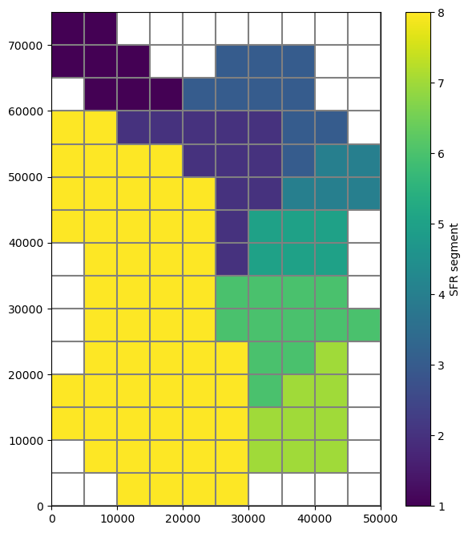
Define the vks (unsaturated zone vertical hydraulic conductivity) array.
[8]:
vksbndpth = proj_root / "examples" / "data" / "uzf_examples" / "vks.dat"
vks = np.loadtxt(vksbndpth)
fig = plt.figure(figsize=(8, 8))
ax = fig.add_subplot(1, 1, 1, aspect="equal")
mapview = flopy.plot.PlotMapView(model=m)
vksplt = mapview.plot_array(vks)
plt.colorbar(vksplt, ax=ax, label="Layer 1 Kv")
linecollection = mapview.plot_grid()
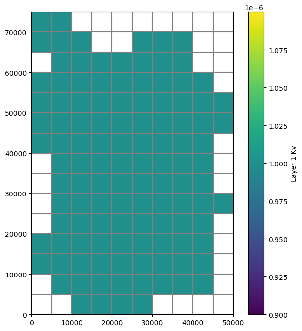
Define the finf array: * load infiltration rates from a file into a 3D array * finf can be submitted to FloPy as a 3D array, list of 2D arrays, list of numeric values, or single numeric value
[9]:
m.nrow_ncol_nlay_nper
[9]:
(15, 10, 1, 12)
[10]:
finf = np.loadtxt(
proj_root / "examples" / "data" / "uzf_examples" / "finf.dat"
)
finf = np.reshape(finf, (m.nper, m.nrow, m.ncol))
finf = {i: finf[i] for i in range(finf.shape[0])}
# plot using PlotMapView
fig = plt.figure(figsize=(8, 8))
ax = fig.add_subplot(1, 1, 1, aspect="equal")
mapview = flopy.plot.PlotMapView(model=m)
quadmesh = mapview.plot_array(finf[0])
plt.colorbar(quadmesh)
linecollection = mapview.plot_grid()
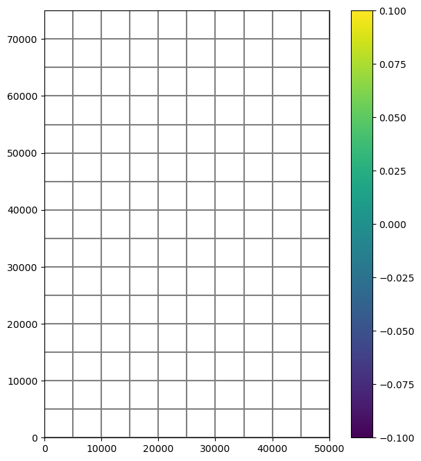
[11]:
plt.plot(
m.dis.perlen.array.cumsum() / 864600,
[a.mean() * 86400 * 365 * 12 for a in finf.values()],
marker="o",
)
plt.xlabel("Time, in days")
plt.ylabel("Average infiltration rate, inches per year");
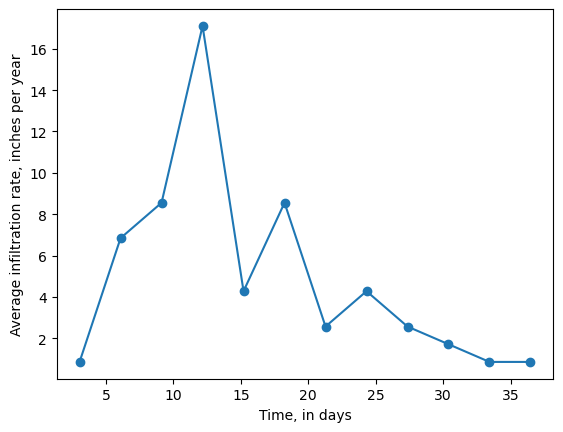
Define extwc (extinction water content) array.
[12]:
extwc = np.loadtxt(
proj_root / "examples" / "data" / "uzf_examples" / "extwc.dat"
)
fig = plt.figure(figsize=(8, 8))
ax = fig.add_subplot(1, 1, 1, aspect="equal")
mapview = flopy.plot.PlotMapView(model=m)
quadmesh = mapview.plot_array(extwc)
plt.colorbar(quadmesh)
linecollection = mapview.plot_grid()
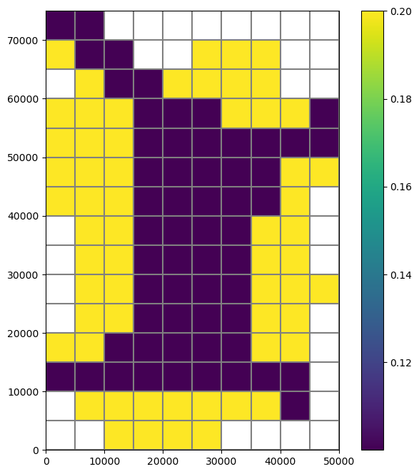
Set up the gages (observation points)
supplied as a dictionary keyed by
IFTUNITA positive value [of
IFTUNIT] is for output of individual cells whereas a negative value is for output that is summed over all model cells.values are a list of
[IUZROW, IUZCOL, IFTUNIT, IUZOPT]IUZROWandIUZCOLare zero based
[13]:
uzgag = {
-68: [-68],
65: [
2,
5,
65,
1,
], # Print time, head, uz thickness and cum. vols of infiltration, recharge, storage, change in storage and ground-water discharge to land surface.
66: [
5,
2,
66,
2,
], # Same as option 1 except rates of infiltration, recharge, change in storage, and ground-water discharge also are printed.
67: [9, 4, 67, 3],
} # Prints time, ground-water head, thickness of unsaturated zone, followed by a series of depths and water contents in the unsaturated zone.
Make the UZF package.
[14]:
uzf = flopy.modflow.ModflowUzf1(
m,
nuztop=1,
iuzfopt=1,
irunflg=1,
ietflg=1,
ipakcb=0,
iuzfcb2=61, # binary output of recharge and groundwater discharge
ntrail2=25,
nsets=20,
surfdep=1.0,
uzgag=uzgag,
iuzfbnd=m.bas6.ibound.array,
irunbnd=irunbnd,
vks=vks, # saturated vertical hydraulic conductivity of the uz
finf=finf, # infiltration rates
eps=3.5, # Brooks-Corey relation of water content to hydraulic conductivity (epsilon)
thts=0.35, # saturated water content of the uz in units of volume of water to total volume
pet=5.000000e-08, # potential ET
extdp=15.0, # ET extinction depth(s)
extwc=extwc, # extinction water content below which ET cannot be removed from the unsaturated zone
unitnumber=19,
)
Write model input files.
[15]:
m.write_input()
Run the model.
[16]:
success, buff = m.run_model()
assert success, f"{m.name} failed to run"
FloPy is using the following executable to run the model: ../../home/runner/.local/bin/modflow/mf2005
MODFLOW-2005
U.S. GEOLOGICAL SURVEY MODULAR FINITE-DIFFERENCE GROUND-WATER FLOW MODEL
Version 1.12.00 2/3/2017
Using NAME file: UZFtest2.nam
Run start date and time (yyyy/mm/dd hh:mm:ss): 2023/05/04 16:10:01
Solving: Stress period: 1 Time step: 1 Ground-Water Flow Eqn.
Solving: Stress period: 2 Time step: 1 Ground-Water Flow Eqn.
Solving: Stress period: 2 Time step: 2 Ground-Water Flow Eqn.
Solving: Stress period: 2 Time step: 3 Ground-Water Flow Eqn.
Solving: Stress period: 2 Time step: 4 Ground-Water Flow Eqn.
Solving: Stress period: 2 Time step: 5 Ground-Water Flow Eqn.
Solving: Stress period: 2 Time step: 6 Ground-Water Flow Eqn.
Solving: Stress period: 2 Time step: 7 Ground-Water Flow Eqn.
Solving: Stress period: 2 Time step: 8 Ground-Water Flow Eqn.
Solving: Stress period: 2 Time step: 9 Ground-Water Flow Eqn.
Solving: Stress period: 2 Time step: 10 Ground-Water Flow Eqn.
Solving: Stress period: 2 Time step: 11 Ground-Water Flow Eqn.
Solving: Stress period: 2 Time step: 12 Ground-Water Flow Eqn.
Solving: Stress period: 2 Time step: 13 Ground-Water Flow Eqn.
Solving: Stress period: 2 Time step: 14 Ground-Water Flow Eqn.
Solving: Stress period: 2 Time step: 15 Ground-Water Flow Eqn.
Solving: Stress period: 3 Time step: 1 Ground-Water Flow Eqn.
Solving: Stress period: 3 Time step: 2 Ground-Water Flow Eqn.
Solving: Stress period: 3 Time step: 3 Ground-Water Flow Eqn.
Solving: Stress period: 3 Time step: 4 Ground-Water Flow Eqn.
Solving: Stress period: 3 Time step: 5 Ground-Water Flow Eqn.
Solving: Stress period: 3 Time step: 6 Ground-Water Flow Eqn.
Solving: Stress period: 3 Time step: 7 Ground-Water Flow Eqn.
Solving: Stress period: 3 Time step: 8 Ground-Water Flow Eqn.
Solving: Stress period: 3 Time step: 9 Ground-Water Flow Eqn.
Solving: Stress period: 3 Time step: 10 Ground-Water Flow Eqn.
Solving: Stress period: 3 Time step: 11 Ground-Water Flow Eqn.
Solving: Stress period: 3 Time step: 12 Ground-Water Flow Eqn.
Solving: Stress period: 3 Time step: 13 Ground-Water Flow Eqn.
Solving: Stress period: 3 Time step: 14 Ground-Water Flow Eqn.
Solving: Stress period: 3 Time step: 15 Ground-Water Flow Eqn.
Solving: Stress period: 4 Time step: 1 Ground-Water Flow Eqn.
Solving: Stress period: 4 Time step: 2 Ground-Water Flow Eqn.
Solving: Stress period: 4 Time step: 3 Ground-Water Flow Eqn.
Solving: Stress period: 4 Time step: 4 Ground-Water Flow Eqn.
Solving: Stress period: 4 Time step: 5 Ground-Water Flow Eqn.
Solving: Stress period: 4 Time step: 6 Ground-Water Flow Eqn.
Solving: Stress period: 4 Time step: 7 Ground-Water Flow Eqn.
Solving: Stress period: 4 Time step: 8 Ground-Water Flow Eqn.
Solving: Stress period: 4 Time step: 9 Ground-Water Flow Eqn.
Solving: Stress period: 4 Time step: 10 Ground-Water Flow Eqn.
Solving: Stress period: 4 Time step: 11 Ground-Water Flow Eqn.
Solving: Stress period: 4 Time step: 12 Ground-Water Flow Eqn.
Solving: Stress period: 4 Time step: 13 Ground-Water Flow Eqn.
Solving: Stress period: 4 Time step: 14 Ground-Water Flow Eqn.
Solving: Stress period: 4 Time step: 15 Ground-Water Flow Eqn.
Solving: Stress period: 5 Time step: 1 Ground-Water Flow Eqn.
Solving: Stress period: 5 Time step: 2 Ground-Water Flow Eqn.
Solving: Stress period: 5 Time step: 3 Ground-Water Flow Eqn.
Solving: Stress period: 5 Time step: 4 Ground-Water Flow Eqn.
Solving: Stress period: 5 Time step: 5 Ground-Water Flow Eqn.
Solving: Stress period: 5 Time step: 6 Ground-Water Flow Eqn.
Solving: Stress period: 5 Time step: 7 Ground-Water Flow Eqn.
Solving: Stress period: 5 Time step: 8 Ground-Water Flow Eqn.
Solving: Stress period: 5 Time step: 9 Ground-Water Flow Eqn.
Solving: Stress period: 5 Time step: 10 Ground-Water Flow Eqn.
Solving: Stress period: 5 Time step: 11 Ground-Water Flow Eqn.
Solving: Stress period: 5 Time step: 12 Ground-Water Flow Eqn.
Solving: Stress period: 5 Time step: 13 Ground-Water Flow Eqn.
Solving: Stress period: 5 Time step: 14 Ground-Water Flow Eqn.
Solving: Stress period: 5 Time step: 15 Ground-Water Flow Eqn.
Solving: Stress period: 6 Time step: 1 Ground-Water Flow Eqn.
Solving: Stress period: 6 Time step: 2 Ground-Water Flow Eqn.
Solving: Stress period: 6 Time step: 3 Ground-Water Flow Eqn.
Solving: Stress period: 6 Time step: 4 Ground-Water Flow Eqn.
Solving: Stress period: 6 Time step: 5 Ground-Water Flow Eqn.
Solving: Stress period: 6 Time step: 6 Ground-Water Flow Eqn.
Solving: Stress period: 6 Time step: 7 Ground-Water Flow Eqn.
Solving: Stress period: 6 Time step: 8 Ground-Water Flow Eqn.
Solving: Stress period: 6 Time step: 9 Ground-Water Flow Eqn.
Solving: Stress period: 6 Time step: 10 Ground-Water Flow Eqn.
Solving: Stress period: 6 Time step: 11 Ground-Water Flow Eqn.
Solving: Stress period: 6 Time step: 12 Ground-Water Flow Eqn.
Solving: Stress period: 6 Time step: 13 Ground-Water Flow Eqn.
Solving: Stress period: 6 Time step: 14 Ground-Water Flow Eqn.
Solving: Stress period: 6 Time step: 15 Ground-Water Flow Eqn.
Solving: Stress period: 7 Time step: 1 Ground-Water Flow Eqn.
Solving: Stress period: 7 Time step: 2 Ground-Water Flow Eqn.
Solving: Stress period: 7 Time step: 3 Ground-Water Flow Eqn.
Solving: Stress period: 7 Time step: 4 Ground-Water Flow Eqn.
Solving: Stress period: 7 Time step: 5 Ground-Water Flow Eqn.
Solving: Stress period: 7 Time step: 6 Ground-Water Flow Eqn.
Solving: Stress period: 7 Time step: 7 Ground-Water Flow Eqn.
Solving: Stress period: 7 Time step: 8 Ground-Water Flow Eqn.
Solving: Stress period: 7 Time step: 9 Ground-Water Flow Eqn.
Solving: Stress period: 7 Time step: 10 Ground-Water Flow Eqn.
Solving: Stress period: 7 Time step: 11 Ground-Water Flow Eqn.
Solving: Stress period: 7 Time step: 12 Ground-Water Flow Eqn.
Solving: Stress period: 7 Time step: 13 Ground-Water Flow Eqn.
Solving: Stress period: 7 Time step: 14 Ground-Water Flow Eqn.
Solving: Stress period: 7 Time step: 15 Ground-Water Flow Eqn.
Solving: Stress period: 8 Time step: 1 Ground-Water Flow Eqn.
Solving: Stress period: 8 Time step: 2 Ground-Water Flow Eqn.
Solving: Stress period: 8 Time step: 3 Ground-Water Flow Eqn.
Solving: Stress period: 8 Time step: 4 Ground-Water Flow Eqn.
Solving: Stress period: 8 Time step: 5 Ground-Water Flow Eqn.
Solving: Stress period: 8 Time step: 6 Ground-Water Flow Eqn.
Solving: Stress period: 8 Time step: 7 Ground-Water Flow Eqn.
Solving: Stress period: 8 Time step: 8 Ground-Water Flow Eqn.
Solving: Stress period: 8 Time step: 9 Ground-Water Flow Eqn.
Solving: Stress period: 8 Time step: 10 Ground-Water Flow Eqn.
Solving: Stress period: 8 Time step: 11 Ground-Water Flow Eqn.
Solving: Stress period: 8 Time step: 12 Ground-Water Flow Eqn.
Solving: Stress period: 8 Time step: 13 Ground-Water Flow Eqn.
Solving: Stress period: 8 Time step: 14 Ground-Water Flow Eqn.
Solving: Stress period: 8 Time step: 15 Ground-Water Flow Eqn.
Solving: Stress period: 9 Time step: 1 Ground-Water Flow Eqn.
Solving: Stress period: 9 Time step: 2 Ground-Water Flow Eqn.
Solving: Stress period: 9 Time step: 3 Ground-Water Flow Eqn.
Solving: Stress period: 9 Time step: 4 Ground-Water Flow Eqn.
Solving: Stress period: 9 Time step: 5 Ground-Water Flow Eqn.
Solving: Stress period: 9 Time step: 6 Ground-Water Flow Eqn.
Solving: Stress period: 9 Time step: 7 Ground-Water Flow Eqn.
Solving: Stress period: 9 Time step: 8 Ground-Water Flow Eqn.
Solving: Stress period: 9 Time step: 9 Ground-Water Flow Eqn.
Solving: Stress period: 9 Time step: 10 Ground-Water Flow Eqn.
Solving: Stress period: 9 Time step: 11 Ground-Water Flow Eqn.
Solving: Stress period: 9 Time step: 12 Ground-Water Flow Eqn.
Solving: Stress period: 9 Time step: 13 Ground-Water Flow Eqn.
Solving: Stress period: 9 Time step: 14 Ground-Water Flow Eqn.
Solving: Stress period: 9 Time step: 15 Ground-Water Flow Eqn.
Solving: Stress period: 10 Time step: 1 Ground-Water Flow Eqn.
Solving: Stress period: 10 Time step: 2 Ground-Water Flow Eqn.
Solving: Stress period: 10 Time step: 3 Ground-Water Flow Eqn.
Solving: Stress period: 10 Time step: 4 Ground-Water Flow Eqn.
Solving: Stress period: 10 Time step: 5 Ground-Water Flow Eqn.
Solving: Stress period: 10 Time step: 6 Ground-Water Flow Eqn.
Solving: Stress period: 10 Time step: 7 Ground-Water Flow Eqn.
Solving: Stress period: 10 Time step: 8 Ground-Water Flow Eqn.
Solving: Stress period: 10 Time step: 9 Ground-Water Flow Eqn.
Solving: Stress period: 10 Time step: 10 Ground-Water Flow Eqn.
Solving: Stress period: 10 Time step: 11 Ground-Water Flow Eqn.
Solving: Stress period: 10 Time step: 12 Ground-Water Flow Eqn.
Solving: Stress period: 10 Time step: 13 Ground-Water Flow Eqn.
Solving: Stress period: 10 Time step: 14 Ground-Water Flow Eqn.
Solving: Stress period: 10 Time step: 15 Ground-Water Flow Eqn.
Solving: Stress period: 11 Time step: 1 Ground-Water Flow Eqn.
Solving: Stress period: 11 Time step: 2 Ground-Water Flow Eqn.
Solving: Stress period: 11 Time step: 3 Ground-Water Flow Eqn.
Solving: Stress period: 11 Time step: 4 Ground-Water Flow Eqn.
Solving: Stress period: 11 Time step: 5 Ground-Water Flow Eqn.
Solving: Stress period: 11 Time step: 6 Ground-Water Flow Eqn.
Solving: Stress period: 11 Time step: 7 Ground-Water Flow Eqn.
Solving: Stress period: 11 Time step: 8 Ground-Water Flow Eqn.
Solving: Stress period: 11 Time step: 9 Ground-Water Flow Eqn.
Solving: Stress period: 11 Time step: 10 Ground-Water Flow Eqn.
Solving: Stress period: 11 Time step: 11 Ground-Water Flow Eqn.
Solving: Stress period: 11 Time step: 12 Ground-Water Flow Eqn.
Solving: Stress period: 11 Time step: 13 Ground-Water Flow Eqn.
Solving: Stress period: 11 Time step: 14 Ground-Water Flow Eqn.
Solving: Stress period: 11 Time step: 15 Ground-Water Flow Eqn.
Solving: Stress period: 12 Time step: 1 Ground-Water Flow Eqn.
Solving: Stress period: 12 Time step: 2 Ground-Water Flow Eqn.
Solving: Stress period: 12 Time step: 3 Ground-Water Flow Eqn.
Solving: Stress period: 12 Time step: 4 Ground-Water Flow Eqn.
Solving: Stress period: 12 Time step: 5 Ground-Water Flow Eqn.
Solving: Stress period: 12 Time step: 6 Ground-Water Flow Eqn.
Solving: Stress period: 12 Time step: 7 Ground-Water Flow Eqn.
Solving: Stress period: 12 Time step: 8 Ground-Water Flow Eqn.
Solving: Stress period: 12 Time step: 9 Ground-Water Flow Eqn.
Solving: Stress period: 12 Time step: 10 Ground-Water Flow Eqn.
Solving: Stress period: 12 Time step: 11 Ground-Water Flow Eqn.
Solving: Stress period: 12 Time step: 12 Ground-Water Flow Eqn.
Solving: Stress period: 12 Time step: 13 Ground-Water Flow Eqn.
Solving: Stress period: 12 Time step: 14 Ground-Water Flow Eqn.
Solving: Stress period: 12 Time step: 15 Ground-Water Flow Eqn.
Run end date and time (yyyy/mm/dd hh:mm:ss): 2023/05/04 16:10:04
Elapsed run time: 2.827 Seconds
Normal termination of simulation
Inspecting results
First, look at the budget output.
[17]:
fpth = path / "UZFtest2.uzfcb2.bin"
avail = os.path.isfile(fpth)
if avail:
uzfbdobjct = flopy.utils.CellBudgetFile(fpth)
uzfbdobjct.list_records()
else:
print('"{}" is not available'.format(fpth))
(1, 1, b' GW ET', 10, 15, -1, 4, 2628000., 2628000., 2628000., b'', b'', b'', b'')
(1, 1, b' UZF RECHARGE', 10, 15, -1, 4, 2628000., 2628000., 2628000., b'', b'', b'', b'')
(1, 1, b' SURFACE LEAKAGE', 10, 15, -1, 4, 2628000., 2628000., 2628000., b'', b'', b'', b'')
(1, 1, b' HORT+DUNN', 10, 15, -1, 4, 2628000., 2628000., 2628000., b'', b'', b'', b'')
(1, 1, b' STORAGE CHANGE', 10, 15, -1, 4, 2628000., 2628000., 2628000., b'', b'', b'', b'')
(1, 2, b' GW ET', 10, 15, -1, 4, 82713.07, 82713.07, 2710713., b'', b'', b'', b'')
(1, 2, b' UZF RECHARGE', 10, 15, -1, 4, 82713.07, 82713.07, 2710713., b'', b'', b'', b'')
(1, 2, b' SURFACE LEAKAGE', 10, 15, -1, 4, 82713.07, 82713.07, 2710713., b'', b'', b'', b'')
(1, 2, b' HORT+DUNN', 10, 15, -1, 4, 82713.07, 82713.07, 2710713., b'', b'', b'', b'')
(1, 2, b' STORAGE CHANGE', 10, 15, -1, 4, 82713.07, 82713.07, 2710713., b'', b'', b'', b'')
(5, 2, b' GW ET', 10, 15, -1, 4, 121100.21, 504971.6, 3132971.5, b'', b'', b'', b'')
(5, 2, b' UZF RECHARGE', 10, 15, -1, 4, 121100.21, 504971.6, 3132971.5, b'', b'', b'', b'')
(5, 2, b' SURFACE LEAKAGE', 10, 15, -1, 4, 121100.21, 504971.6, 3132971.5, b'', b'', b'', b'')
(5, 2, b' HORT+DUNN', 10, 15, -1, 4, 121100.21, 504971.6, 3132971.5, b'', b'', b'', b'')
(5, 2, b' STORAGE CHANGE', 10, 15, -1, 4, 121100.21, 504971.6, 3132971.5, b'', b'', b'', b'')
(10, 2, b' GW ET', 10, 15, -1, 4, 195033.11, 1318233.4, 3946233.2, b'', b'', b'', b'')
(10, 2, b' UZF RECHARGE', 10, 15, -1, 4, 195033.11, 1318233.4, 3946233.2, b'', b'', b'', b'')
(10, 2, b' SURFACE LEAKAGE', 10, 15, -1, 4, 195033.11, 1318233.4, 3946233.2, b'', b'', b'', b'')
(10, 2, b' HORT+DUNN', 10, 15, -1, 4, 195033.11, 1318233.4, 3946233.2, b'', b'', b'', b'')
(10, 2, b' STORAGE CHANGE', 10, 15, -1, 4, 195033.11, 1318233.4, 3946233.2, b'', b'', b'', b'')
(15, 2, b' GW ET', 10, 15, -1, 4, 314102.8, 2627999.8, 5256000., b'', b'', b'', b'')
(15, 2, b' UZF RECHARGE', 10, 15, -1, 4, 314102.8, 2627999.8, 5256000., b'', b'', b'', b'')
(15, 2, b' SURFACE LEAKAGE', 10, 15, -1, 4, 314102.8, 2627999.8, 5256000., b'', b'', b'', b'')
(15, 2, b' HORT+DUNN', 10, 15, -1, 4, 314102.8, 2627999.8, 5256000., b'', b'', b'', b'')
(15, 2, b' STORAGE CHANGE', 10, 15, -1, 4, 314102.8, 2627999.8, 5256000., b'', b'', b'', b'')
(1, 3, b' GW ET', 10, 15, -1, 4, 82713.07, 82713.07, 5338713., b'', b'', b'', b'')
(1, 3, b' UZF RECHARGE', 10, 15, -1, 4, 82713.07, 82713.07, 5338713., b'', b'', b'', b'')
(1, 3, b' SURFACE LEAKAGE', 10, 15, -1, 4, 82713.07, 82713.07, 5338713., b'', b'', b'', b'')
(1, 3, b' HORT+DUNN', 10, 15, -1, 4, 82713.07, 82713.07, 5338713., b'', b'', b'', b'')
(1, 3, b' STORAGE CHANGE', 10, 15, -1, 4, 82713.07, 82713.07, 5338713., b'', b'', b'', b'')
(5, 3, b' GW ET', 10, 15, -1, 4, 121100.21, 504971.6, 5760971.5, b'', b'', b'', b'')
(5, 3, b' UZF RECHARGE', 10, 15, -1, 4, 121100.21, 504971.6, 5760971.5, b'', b'', b'', b'')
(5, 3, b' SURFACE LEAKAGE', 10, 15, -1, 4, 121100.21, 504971.6, 5760971.5, b'', b'', b'', b'')
(5, 3, b' HORT+DUNN', 10, 15, -1, 4, 121100.21, 504971.6, 5760971.5, b'', b'', b'', b'')
(5, 3, b' STORAGE CHANGE', 10, 15, -1, 4, 121100.21, 504971.6, 5760971.5, b'', b'', b'', b'')
(10, 3, b' GW ET', 10, 15, -1, 4, 195033.11, 1318233.4, 6574233.5, b'', b'', b'', b'')
(10, 3, b' UZF RECHARGE', 10, 15, -1, 4, 195033.11, 1318233.4, 6574233.5, b'', b'', b'', b'')
(10, 3, b' SURFACE LEAKAGE', 10, 15, -1, 4, 195033.11, 1318233.4, 6574233.5, b'', b'', b'', b'')
(10, 3, b' HORT+DUNN', 10, 15, -1, 4, 195033.11, 1318233.4, 6574233.5, b'', b'', b'', b'')
(10, 3, b' STORAGE CHANGE', 10, 15, -1, 4, 195033.11, 1318233.4, 6574233.5, b'', b'', b'', b'')
(15, 3, b' GW ET', 10, 15, -1, 4, 314102.8, 2627999.8, 7884000., b'', b'', b'', b'')
(15, 3, b' UZF RECHARGE', 10, 15, -1, 4, 314102.8, 2627999.8, 7884000., b'', b'', b'', b'')
(15, 3, b' SURFACE LEAKAGE', 10, 15, -1, 4, 314102.8, 2627999.8, 7884000., b'', b'', b'', b'')
(15, 3, b' HORT+DUNN', 10, 15, -1, 4, 314102.8, 2627999.8, 7884000., b'', b'', b'', b'')
(15, 3, b' STORAGE CHANGE', 10, 15, -1, 4, 314102.8, 2627999.8, 7884000., b'', b'', b'', b'')
(5, 4, b' GW ET', 10, 15, -1, 4, 121100.21, 504971.6, 8388972., b'', b'', b'', b'')
(5, 4, b' UZF RECHARGE', 10, 15, -1, 4, 121100.21, 504971.6, 8388972., b'', b'', b'', b'')
(5, 4, b' SURFACE LEAKAGE', 10, 15, -1, 4, 121100.21, 504971.6, 8388972., b'', b'', b'', b'')
(5, 4, b' HORT+DUNN', 10, 15, -1, 4, 121100.21, 504971.6, 8388972., b'', b'', b'', b'')
(5, 4, b' STORAGE CHANGE', 10, 15, -1, 4, 121100.21, 504971.6, 8388972., b'', b'', b'', b'')
(10, 4, b' GW ET', 10, 15, -1, 4, 195033.11, 1318233.4, 9202233., b'', b'', b'', b'')
(10, 4, b' UZF RECHARGE', 10, 15, -1, 4, 195033.11, 1318233.4, 9202233., b'', b'', b'', b'')
(10, 4, b' SURFACE LEAKAGE', 10, 15, -1, 4, 195033.11, 1318233.4, 9202233., b'', b'', b'', b'')
(10, 4, b' HORT+DUNN', 10, 15, -1, 4, 195033.11, 1318233.4, 9202233., b'', b'', b'', b'')
(10, 4, b' STORAGE CHANGE', 10, 15, -1, 4, 195033.11, 1318233.4, 9202233., b'', b'', b'', b'')
(15, 4, b' GW ET', 10, 15, -1, 4, 314102.8, 2627999.8, 10511999., b'', b'', b'', b'')
(15, 4, b' UZF RECHARGE', 10, 15, -1, 4, 314102.8, 2627999.8, 10511999., b'', b'', b'', b'')
(15, 4, b' SURFACE LEAKAGE', 10, 15, -1, 4, 314102.8, 2627999.8, 10511999., b'', b'', b'', b'')
(15, 4, b' HORT+DUNN', 10, 15, -1, 4, 314102.8, 2627999.8, 10511999., b'', b'', b'', b'')
(15, 4, b' STORAGE CHANGE', 10, 15, -1, 4, 314102.8, 2627999.8, 10511999., b'', b'', b'', b'')
(5, 5, b' GW ET', 10, 15, -1, 4, 121100.21, 504971.6, 11016970., b'', b'', b'', b'')
(5, 5, b' UZF RECHARGE', 10, 15, -1, 4, 121100.21, 504971.6, 11016970., b'', b'', b'', b'')
(5, 5, b' SURFACE LEAKAGE', 10, 15, -1, 4, 121100.21, 504971.6, 11016970., b'', b'', b'', b'')
(5, 5, b' HORT+DUNN', 10, 15, -1, 4, 121100.21, 504971.6, 11016970., b'', b'', b'', b'')
(5, 5, b' STORAGE CHANGE', 10, 15, -1, 4, 121100.21, 504971.6, 11016970., b'', b'', b'', b'')
(10, 5, b' GW ET', 10, 15, -1, 4, 195033.11, 1318233.4, 11830231., b'', b'', b'', b'')
(10, 5, b' UZF RECHARGE', 10, 15, -1, 4, 195033.11, 1318233.4, 11830231., b'', b'', b'', b'')
(10, 5, b' SURFACE LEAKAGE', 10, 15, -1, 4, 195033.11, 1318233.4, 11830231., b'', b'', b'', b'')
(10, 5, b' HORT+DUNN', 10, 15, -1, 4, 195033.11, 1318233.4, 11830231., b'', b'', b'', b'')
(10, 5, b' STORAGE CHANGE', 10, 15, -1, 4, 195033.11, 1318233.4, 11830231., b'', b'', b'', b'')
(15, 5, b' GW ET', 10, 15, -1, 4, 314102.8, 2627999.8, 13139997., b'', b'', b'', b'')
(15, 5, b' UZF RECHARGE', 10, 15, -1, 4, 314102.8, 2627999.8, 13139997., b'', b'', b'', b'')
(15, 5, b' SURFACE LEAKAGE', 10, 15, -1, 4, 314102.8, 2627999.8, 13139997., b'', b'', b'', b'')
(15, 5, b' HORT+DUNN', 10, 15, -1, 4, 314102.8, 2627999.8, 13139997., b'', b'', b'', b'')
(15, 5, b' STORAGE CHANGE', 10, 15, -1, 4, 314102.8, 2627999.8, 13139997., b'', b'', b'', b'')
(5, 6, b' GW ET', 10, 15, -1, 4, 121100.21, 504971.6, 13644968., b'', b'', b'', b'')
(5, 6, b' UZF RECHARGE', 10, 15, -1, 4, 121100.21, 504971.6, 13644968., b'', b'', b'', b'')
(5, 6, b' SURFACE LEAKAGE', 10, 15, -1, 4, 121100.21, 504971.6, 13644968., b'', b'', b'', b'')
(5, 6, b' HORT+DUNN', 10, 15, -1, 4, 121100.21, 504971.6, 13644968., b'', b'', b'', b'')
(5, 6, b' STORAGE CHANGE', 10, 15, -1, 4, 121100.21, 504971.6, 13644968., b'', b'', b'', b'')
(10, 6, b' GW ET', 10, 15, -1, 4, 195033.11, 1318233.4, 14458229., b'', b'', b'', b'')
(10, 6, b' UZF RECHARGE', 10, 15, -1, 4, 195033.11, 1318233.4, 14458229., b'', b'', b'', b'')
(10, 6, b' SURFACE LEAKAGE', 10, 15, -1, 4, 195033.11, 1318233.4, 14458229., b'', b'', b'', b'')
(10, 6, b' HORT+DUNN', 10, 15, -1, 4, 195033.11, 1318233.4, 14458229., b'', b'', b'', b'')
(10, 6, b' STORAGE CHANGE', 10, 15, -1, 4, 195033.11, 1318233.4, 14458229., b'', b'', b'', b'')
(15, 6, b' GW ET', 10, 15, -1, 4, 314102.8, 2627999.8, 15767995., b'', b'', b'', b'')
(15, 6, b' UZF RECHARGE', 10, 15, -1, 4, 314102.8, 2627999.8, 15767995., b'', b'', b'', b'')
(15, 6, b' SURFACE LEAKAGE', 10, 15, -1, 4, 314102.8, 2627999.8, 15767995., b'', b'', b'', b'')
(15, 6, b' HORT+DUNN', 10, 15, -1, 4, 314102.8, 2627999.8, 15767995., b'', b'', b'', b'')
(15, 6, b' STORAGE CHANGE', 10, 15, -1, 4, 314102.8, 2627999.8, 15767995., b'', b'', b'', b'')
(5, 7, b' GW ET', 10, 15, -1, 4, 121100.21, 504971.6, 16272966., b'', b'', b'', b'')
(5, 7, b' UZF RECHARGE', 10, 15, -1, 4, 121100.21, 504971.6, 16272966., b'', b'', b'', b'')
(5, 7, b' SURFACE LEAKAGE', 10, 15, -1, 4, 121100.21, 504971.6, 16272966., b'', b'', b'', b'')
(5, 7, b' HORT+DUNN', 10, 15, -1, 4, 121100.21, 504971.6, 16272966., b'', b'', b'', b'')
(5, 7, b' STORAGE CHANGE', 10, 15, -1, 4, 121100.21, 504971.6, 16272966., b'', b'', b'', b'')
(10, 7, b' GW ET', 10, 15, -1, 4, 195033.11, 1318233.4, 17086228., b'', b'', b'', b'')
(10, 7, b' UZF RECHARGE', 10, 15, -1, 4, 195033.11, 1318233.4, 17086228., b'', b'', b'', b'')
(10, 7, b' SURFACE LEAKAGE', 10, 15, -1, 4, 195033.11, 1318233.4, 17086228., b'', b'', b'', b'')
(10, 7, b' HORT+DUNN', 10, 15, -1, 4, 195033.11, 1318233.4, 17086228., b'', b'', b'', b'')
(10, 7, b' STORAGE CHANGE', 10, 15, -1, 4, 195033.11, 1318233.4, 17086228., b'', b'', b'', b'')
(15, 7, b' GW ET', 10, 15, -1, 4, 314102.8, 2627999.8, 18395994., b'', b'', b'', b'')
(15, 7, b' UZF RECHARGE', 10, 15, -1, 4, 314102.8, 2627999.8, 18395994., b'', b'', b'', b'')
(15, 7, b' SURFACE LEAKAGE', 10, 15, -1, 4, 314102.8, 2627999.8, 18395994., b'', b'', b'', b'')
(15, 7, b' HORT+DUNN', 10, 15, -1, 4, 314102.8, 2627999.8, 18395994., b'', b'', b'', b'')
(15, 7, b' STORAGE CHANGE', 10, 15, -1, 4, 314102.8, 2627999.8, 18395994., b'', b'', b'', b'')
(5, 8, b' GW ET', 10, 15, -1, 4, 121100.21, 504971.6, 18900966., b'', b'', b'', b'')
(5, 8, b' UZF RECHARGE', 10, 15, -1, 4, 121100.21, 504971.6, 18900966., b'', b'', b'', b'')
(5, 8, b' SURFACE LEAKAGE', 10, 15, -1, 4, 121100.21, 504971.6, 18900966., b'', b'', b'', b'')
(5, 8, b' HORT+DUNN', 10, 15, -1, 4, 121100.21, 504971.6, 18900966., b'', b'', b'', b'')
(5, 8, b' STORAGE CHANGE', 10, 15, -1, 4, 121100.21, 504971.6, 18900966., b'', b'', b'', b'')
(10, 8, b' GW ET', 10, 15, -1, 4, 195033.11, 1318233.4, 19714228., b'', b'', b'', b'')
(10, 8, b' UZF RECHARGE', 10, 15, -1, 4, 195033.11, 1318233.4, 19714228., b'', b'', b'', b'')
(10, 8, b' SURFACE LEAKAGE', 10, 15, -1, 4, 195033.11, 1318233.4, 19714228., b'', b'', b'', b'')
(10, 8, b' HORT+DUNN', 10, 15, -1, 4, 195033.11, 1318233.4, 19714228., b'', b'', b'', b'')
(10, 8, b' STORAGE CHANGE', 10, 15, -1, 4, 195033.11, 1318233.4, 19714228., b'', b'', b'', b'')
(15, 8, b' GW ET', 10, 15, -1, 4, 314102.8, 2627999.8, 21023994., b'', b'', b'', b'')
(15, 8, b' UZF RECHARGE', 10, 15, -1, 4, 314102.8, 2627999.8, 21023994., b'', b'', b'', b'')
(15, 8, b' SURFACE LEAKAGE', 10, 15, -1, 4, 314102.8, 2627999.8, 21023994., b'', b'', b'', b'')
(15, 8, b' HORT+DUNN', 10, 15, -1, 4, 314102.8, 2627999.8, 21023994., b'', b'', b'', b'')
(15, 8, b' STORAGE CHANGE', 10, 15, -1, 4, 314102.8, 2627999.8, 21023994., b'', b'', b'', b'')
(5, 9, b' GW ET', 10, 15, -1, 4, 121100.21, 504971.6, 21528966., b'', b'', b'', b'')
(5, 9, b' UZF RECHARGE', 10, 15, -1, 4, 121100.21, 504971.6, 21528966., b'', b'', b'', b'')
(5, 9, b' SURFACE LEAKAGE', 10, 15, -1, 4, 121100.21, 504971.6, 21528966., b'', b'', b'', b'')
(5, 9, b' HORT+DUNN', 10, 15, -1, 4, 121100.21, 504971.6, 21528966., b'', b'', b'', b'')
(5, 9, b' STORAGE CHANGE', 10, 15, -1, 4, 121100.21, 504971.6, 21528966., b'', b'', b'', b'')
(10, 9, b' GW ET', 10, 15, -1, 4, 195033.11, 1318233.4, 22342228., b'', b'', b'', b'')
(10, 9, b' UZF RECHARGE', 10, 15, -1, 4, 195033.11, 1318233.4, 22342228., b'', b'', b'', b'')
(10, 9, b' SURFACE LEAKAGE', 10, 15, -1, 4, 195033.11, 1318233.4, 22342228., b'', b'', b'', b'')
(10, 9, b' HORT+DUNN', 10, 15, -1, 4, 195033.11, 1318233.4, 22342228., b'', b'', b'', b'')
(10, 9, b' STORAGE CHANGE', 10, 15, -1, 4, 195033.11, 1318233.4, 22342228., b'', b'', b'', b'')
(15, 9, b' GW ET', 10, 15, -1, 4, 314102.8, 2627999.8, 23651994., b'', b'', b'', b'')
(15, 9, b' UZF RECHARGE', 10, 15, -1, 4, 314102.8, 2627999.8, 23651994., b'', b'', b'', b'')
(15, 9, b' SURFACE LEAKAGE', 10, 15, -1, 4, 314102.8, 2627999.8, 23651994., b'', b'', b'', b'')
(15, 9, b' HORT+DUNN', 10, 15, -1, 4, 314102.8, 2627999.8, 23651994., b'', b'', b'', b'')
(15, 9, b' STORAGE CHANGE', 10, 15, -1, 4, 314102.8, 2627999.8, 23651994., b'', b'', b'', b'')
(5, 10, b' GW ET', 10, 15, -1, 4, 121100.21, 504971.6, 24156966., b'', b'', b'', b'')
(5, 10, b' UZF RECHARGE', 10, 15, -1, 4, 121100.21, 504971.6, 24156966., b'', b'', b'', b'')
(5, 10, b' SURFACE LEAKAGE', 10, 15, -1, 4, 121100.21, 504971.6, 24156966., b'', b'', b'', b'')
(5, 10, b' HORT+DUNN', 10, 15, -1, 4, 121100.21, 504971.6, 24156966., b'', b'', b'', b'')
(5, 10, b' STORAGE CHANGE', 10, 15, -1, 4, 121100.21, 504971.6, 24156966., b'', b'', b'', b'')
(10, 10, b' GW ET', 10, 15, -1, 4, 195033.11, 1318233.4, 24970228., b'', b'', b'', b'')
(10, 10, b' UZF RECHARGE', 10, 15, -1, 4, 195033.11, 1318233.4, 24970228., b'', b'', b'', b'')
(10, 10, b' SURFACE LEAKAGE', 10, 15, -1, 4, 195033.11, 1318233.4, 24970228., b'', b'', b'', b'')
(10, 10, b' HORT+DUNN', 10, 15, -1, 4, 195033.11, 1318233.4, 24970228., b'', b'', b'', b'')
(10, 10, b' STORAGE CHANGE', 10, 15, -1, 4, 195033.11, 1318233.4, 24970228., b'', b'', b'', b'')
(15, 10, b' GW ET', 10, 15, -1, 4, 314102.8, 2627999.8, 26279994., b'', b'', b'', b'')
(15, 10, b' UZF RECHARGE', 10, 15, -1, 4, 314102.8, 2627999.8, 26279994., b'', b'', b'', b'')
(15, 10, b' SURFACE LEAKAGE', 10, 15, -1, 4, 314102.8, 2627999.8, 26279994., b'', b'', b'', b'')
(15, 10, b' HORT+DUNN', 10, 15, -1, 4, 314102.8, 2627999.8, 26279994., b'', b'', b'', b'')
(15, 10, b' STORAGE CHANGE', 10, 15, -1, 4, 314102.8, 2627999.8, 26279994., b'', b'', b'', b'')
(5, 11, b' GW ET', 10, 15, -1, 4, 121100.21, 504971.6, 26784966., b'', b'', b'', b'')
(5, 11, b' UZF RECHARGE', 10, 15, -1, 4, 121100.21, 504971.6, 26784966., b'', b'', b'', b'')
(5, 11, b' SURFACE LEAKAGE', 10, 15, -1, 4, 121100.21, 504971.6, 26784966., b'', b'', b'', b'')
(5, 11, b' HORT+DUNN', 10, 15, -1, 4, 121100.21, 504971.6, 26784966., b'', b'', b'', b'')
(5, 11, b' STORAGE CHANGE', 10, 15, -1, 4, 121100.21, 504971.6, 26784966., b'', b'', b'', b'')
(10, 11, b' GW ET', 10, 15, -1, 4, 195033.11, 1318233.4, 27598228., b'', b'', b'', b'')
(10, 11, b' UZF RECHARGE', 10, 15, -1, 4, 195033.11, 1318233.4, 27598228., b'', b'', b'', b'')
(10, 11, b' SURFACE LEAKAGE', 10, 15, -1, 4, 195033.11, 1318233.4, 27598228., b'', b'', b'', b'')
(10, 11, b' HORT+DUNN', 10, 15, -1, 4, 195033.11, 1318233.4, 27598228., b'', b'', b'', b'')
(10, 11, b' STORAGE CHANGE', 10, 15, -1, 4, 195033.11, 1318233.4, 27598228., b'', b'', b'', b'')
(15, 11, b' GW ET', 10, 15, -1, 4, 314102.8, 2627999.8, 28907994., b'', b'', b'', b'')
(15, 11, b' UZF RECHARGE', 10, 15, -1, 4, 314102.8, 2627999.8, 28907994., b'', b'', b'', b'')
(15, 11, b' SURFACE LEAKAGE', 10, 15, -1, 4, 314102.8, 2627999.8, 28907994., b'', b'', b'', b'')
(15, 11, b' HORT+DUNN', 10, 15, -1, 4, 314102.8, 2627999.8, 28907994., b'', b'', b'', b'')
(15, 11, b' STORAGE CHANGE', 10, 15, -1, 4, 314102.8, 2627999.8, 28907994., b'', b'', b'', b'')
(5, 12, b' GW ET', 10, 15, -1, 4, 121100.21, 504971.6, 29412966., b'', b'', b'', b'')
(5, 12, b' UZF RECHARGE', 10, 15, -1, 4, 121100.21, 504971.6, 29412966., b'', b'', b'', b'')
(5, 12, b' SURFACE LEAKAGE', 10, 15, -1, 4, 121100.21, 504971.6, 29412966., b'', b'', b'', b'')
(5, 12, b' HORT+DUNN', 10, 15, -1, 4, 121100.21, 504971.6, 29412966., b'', b'', b'', b'')
(5, 12, b' STORAGE CHANGE', 10, 15, -1, 4, 121100.21, 504971.6, 29412966., b'', b'', b'', b'')
(10, 12, b' GW ET', 10, 15, -1, 4, 195033.11, 1318233.4, 30226228., b'', b'', b'', b'')
(10, 12, b' UZF RECHARGE', 10, 15, -1, 4, 195033.11, 1318233.4, 30226228., b'', b'', b'', b'')
(10, 12, b' SURFACE LEAKAGE', 10, 15, -1, 4, 195033.11, 1318233.4, 30226228., b'', b'', b'', b'')
(10, 12, b' HORT+DUNN', 10, 15, -1, 4, 195033.11, 1318233.4, 30226228., b'', b'', b'', b'')
(10, 12, b' STORAGE CHANGE', 10, 15, -1, 4, 195033.11, 1318233.4, 30226228., b'', b'', b'', b'')
(15, 12, b' GW ET', 10, 15, -1, 4, 314102.8, 2627999.8, 31535994., b'', b'', b'', b'')
(15, 12, b' UZF RECHARGE', 10, 15, -1, 4, 314102.8, 2627999.8, 31535994., b'', b'', b'', b'')
(15, 12, b' SURFACE LEAKAGE', 10, 15, -1, 4, 314102.8, 2627999.8, 31535994., b'', b'', b'', b'')
(15, 12, b' HORT+DUNN', 10, 15, -1, 4, 314102.8, 2627999.8, 31535994., b'', b'', b'', b'')
(15, 12, b' STORAGE CHANGE', 10, 15, -1, 4, 314102.8, 2627999.8, 31535994., b'', b'', b'', b'')
[18]:
if success and avail:
r = uzfbdobjct.get_data(text="UZF RECHARGE")
et = uzfbdobjct.get_data(text="GW ET")
fig = plt.figure(figsize=(8, 8))
ax = fig.add_subplot(1, 1, 1, aspect="equal")
mapview = flopy.plot.PlotMapView(model=m)
quadmesh = mapview.plot_array(r[6])
plt.colorbar(quadmesh)
linecollection = mapview.plot_grid()
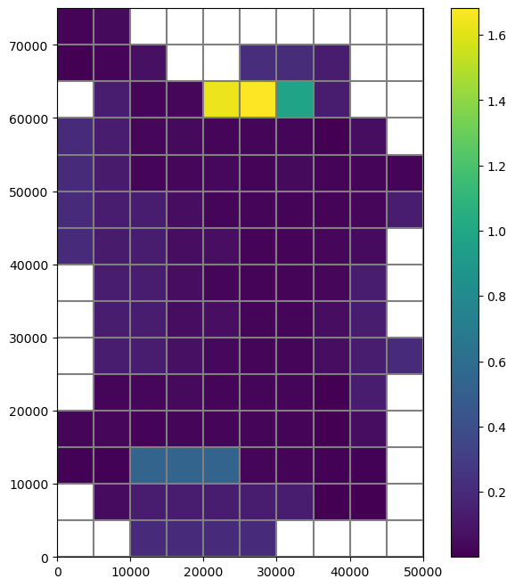
[19]:
if avail:
rtot = [rp.sum() for rp in r]
ettot = [etp.sum() for etp in et]
sltot = [sl.sum() for sl in uzfbdobjct.get_data(text="SURFACE LEAKAGE")]
plt.plot(rtot, label="simulated recharge")
plt.plot(np.abs(ettot), label="simulated actual et")
plt.plot(np.abs(sltot), label="simulated surface leakage")
plt.xlabel("Timestep")
plt.ylabel("Volume, in cubic feet")
plt.legend()
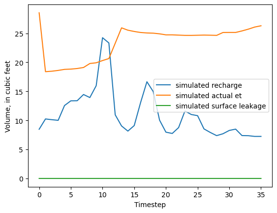
Look at the gages.
[20]:
fpth = path / "UZFtest2.uzf68.out"
avail = os.path.isfile(fpth)
if avail:
dtype = [
("TIME", float),
("APPLIED-INFIL", float),
("RUNOFF", float),
("ACTUAL-INFIL", float),
("SURFACE-LEAK", float),
("UZ-ET", float),
("GW-ET", float),
("UZSTOR-CHANGE", float),
("RECHARGE", float),
]
# read data from file
df = np.genfromtxt(fpth, skip_header=3, dtype=dtype)
# convert numpy recarray to pandas dataframe
df = pd.DataFrame(data=df)
# set index to the time column
df.set_index(["TIME"], inplace=True)
# plot the data
ax = df.plot(legend=False, figsize=(15, 10))
patches, labels = ax.get_legend_handles_labels()
ax.legend(patches, labels, loc=1)
ax.set_ylabel("Volume for whole model, in cubic feet")
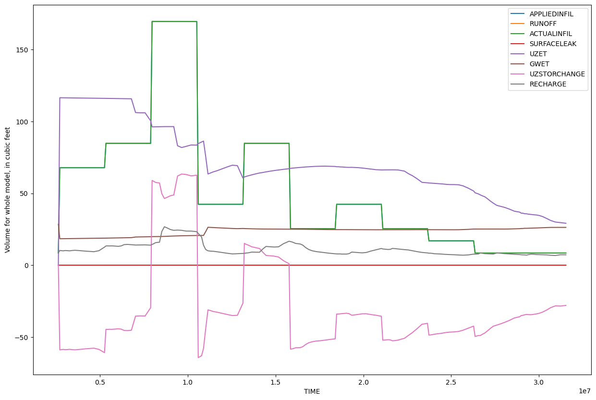
Plot water content profile through time at row 10, column 5.
[21]:
fpth = path / "UZFtest2.uzf67.out"
avail = os.path.isfile(fpth)
if avail:
data = []
with open(fpth) as input:
for i in range(3):
next(input)
for line in input:
line = line.strip().split()
if len(line) == 6:
layer = int(line.pop(0))
time = float(line.pop(0))
head = float(line.pop(0))
uzthick = float(line.pop(0))
depth = float(line.pop(0))
watercontent = float(line.pop(0))
data.append([layer, time, head, uzthick, depth, watercontent])
[22]:
if avail:
df3 = pd.DataFrame(
data,
columns=["layer", "time", "head", "uzthick", "depth", "watercontent"],
)
df3.head(41)
[23]:
if avail:
wc = df3.watercontent.values.reshape(len(df3.time.unique()), 40).T
wc = pd.DataFrame(wc, columns=df3.time.unique(), index=df3.depth[0:40])
wc.head()
[24]:
if avail:
fig, ax = plt.subplots(figsize=(15, 10))
plt.imshow(wc, interpolation="None")
ax.set_aspect(3)
r, c = wc.shape
xcol_locs = np.linspace(0, c - 1, 8, dtype=int)
ycol_locs = np.linspace(0, r - 1, 5, dtype=int)
ax.set_xticks(xcol_locs)
xlabels = wc.columns
ax.set_xticklabels(xlabels[xcol_locs])
ax.set_ylabel("Depth, in feet")
ax.set_yticks(ycol_locs)
ax.set_yticklabels(wc.index[ycol_locs])
ax.set_xlabel("Time, in seconds")
plt.colorbar(label="Water content")
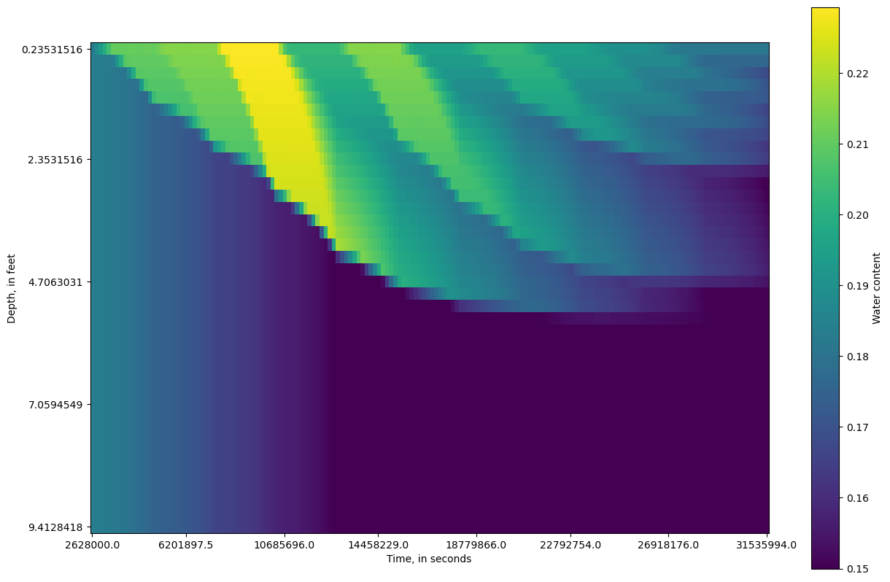
Clean up the temporary directory.
[25]:
try:
# ignore PermissionError on Windows
temp_dir.cleanup()
except:
pass